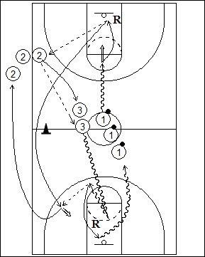

Catégorie : SHOOTS (Sh-016)Déroulement
- Les joueurs sont sur trois files : une avec ballons au centre du terrain; une à hauteur d'une ligne de lancers-francs le long d'une sideline; la troisième en zône arrière près du rond central.
- Le premier joueur de la file 1 part énergiquement en dribble et prend un jump shoot. Il réalise son rebond et la première passe vers le premier joueur de la file 2. Celui-ci prolonge vers le premier joueur de la file 3 qui part en dribble vers l'anneau opposé. Après son rebond, le premier joueur de la file 1 va également vers l'anneau opposé en passant derrière le cône de la ligne médiane. Le premier joueur de la file 3 effectue le back dribble jusqu'au moment où il peut passer le ballon au premier joueur de la file 1 pour un nouveau jump shoot.
- Après son deuxième shoot, 1 va dans la file 2. Après sa passe à 3, 2 va dans la file 3. Après sa passe à 1, 3 effectue le deuxième rebond et va en dribble derrière la file 1.
Coaching points
- Réaliser le drill avec départ côté droit et gauche.
- Insister sur une bonne passe dans le dribble (back dribble) de 3 vers 1.